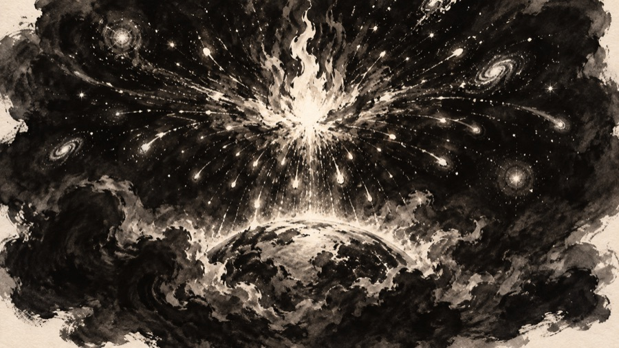
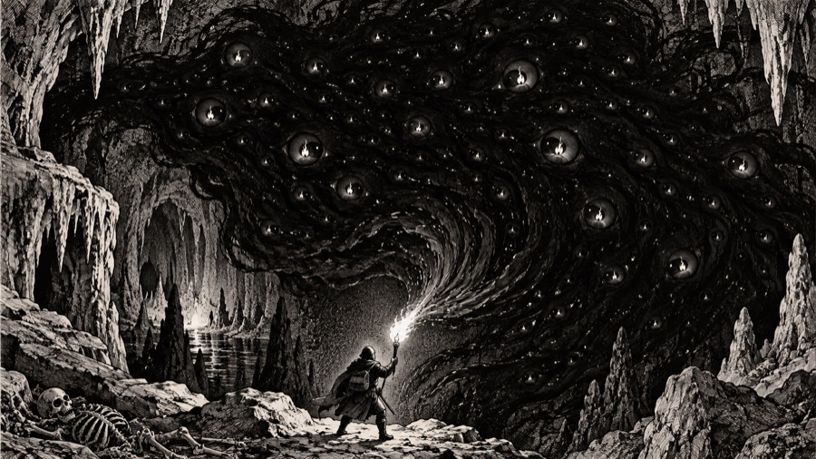
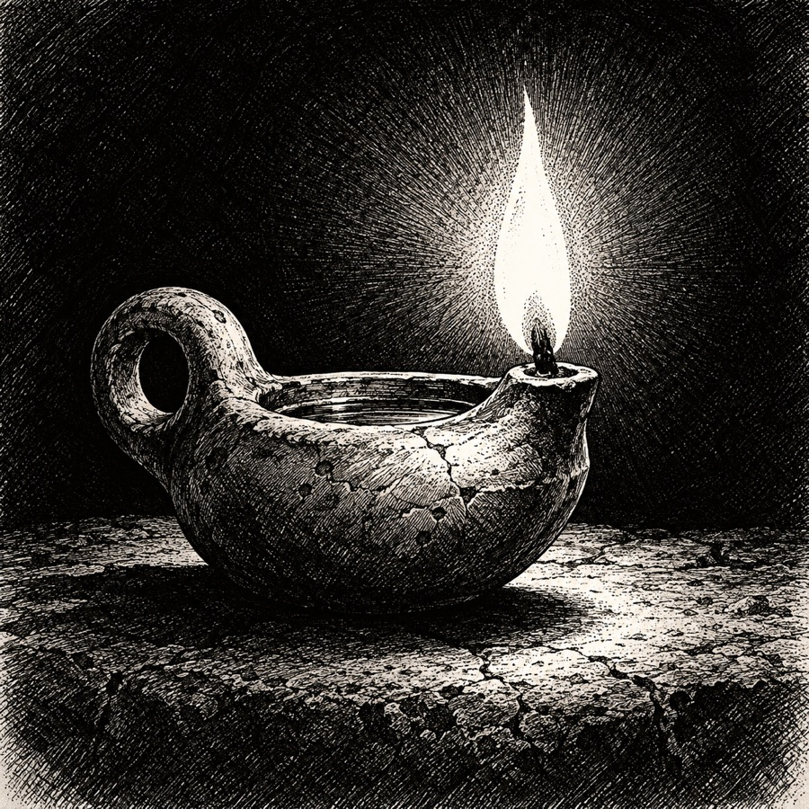
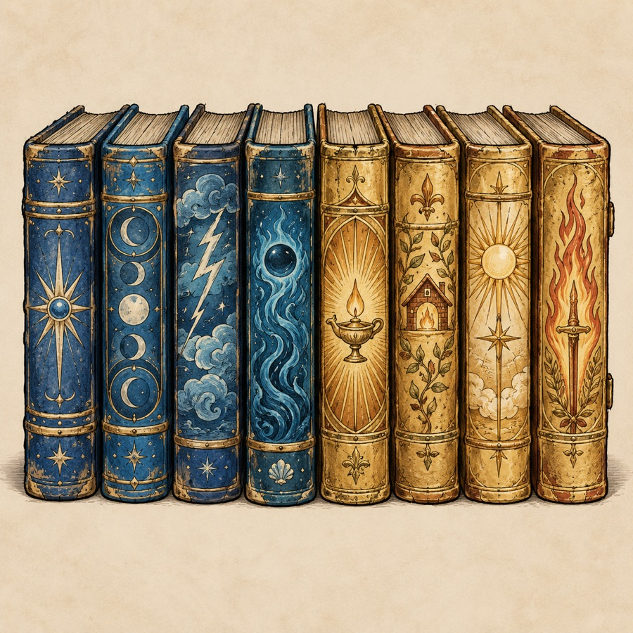

Cosmology: the Gloam and the First Fire

Draft. What the Keepers teach, what the Collegium argues, and what the miners say over their ale. They do not agree.
Before anything: the Gloam
In the beginning there was only the Gloam: a still, lightless sea with no surface and no floor. It was not wicked. It had no shape to be wicked with. It had one nature, which was to fill. Wherever there was room, the Gloam flowed in and made it dark.
The Kindling
No one knows who struck the First Fire, or whether anyone did. The Keepers say it chose to burn. The Arcanists of the Collegium say it was a flaw in the Gloam, a place where the dark pressed so hard on itself that it caught. The Ashborn say the First Fire is a person, and that she is still alive.
However it began, the Fire burned, and where it burned the Gloam could not be. The Fire's light pushed the dark back into a great hollow sphere, and inside the sphere the world took form: rock where the heat cooled, water where the steam fell, air in between. This is the Kindling, and every reckoning of time in the world starts after it.
The Fire did not last. It burned so hot that it burst, and its sparks flew outward across the inside of the sphere. The ones that flew farthest are the stars, each still holding back its little circle of night. The heaviest sank into the deep rock and became the deep fires, the magma that warms the roots of the world. And one ember fell on the surface and was carried by hand. That ember is the source of every hearth, lamp and torch since, which is why the old name of the world is Torchlight: the land that was lit by a carried flame.
What the Fire left behind
When the Fire burst, the Gloam flooded back towards the middle. Most of it was burned away by the falling sparks, but not all of it. At the bottom of the world, under the deepest of the deep fires, a pool of it was trapped: the last of the old dark, sealed in rock, cut off from the great Gloam outside the stars.
That pool is Morrowgloom.
Morrowgloom, the Lantern-Eater

Morrowgloom is what the Gloam becomes when it is cornered. Out among the stars the Gloam is patient. Trapped beneath the world it is starving, and it has learned the one thing that can feed it: light. When it swallows a flame, the flame does not go out. It goes into Morrowgloom and stays there, and Morrowgloom grows by that much.
The Keepers' name for it means "the gloom of tomorrow." Every light it eats is a dawn that will not come. If it ate enough, the old teaching goes, it would rise to the surface, put out the hearths, then the sun, then the stars, and the world would close up again into the still sea it came from.
It does not think. Morrowgloom is a will that is only hunger for light. It makes no plans, speaks no words and holds no grudge; it does not hate the world, any more than a drain hates water. Everything it does is reaching for the nearest light. That is what makes it so hard to fight: it cannot be bargained with, frightened, tricked or persuaded, and it never stops. Things that do think, like the fiends and the Many-Mouthed, have learned to use its hunger for their own ends, but none of them can command it.
In the game, Morrowgloom waits at 2,500 ft as "a darkness older than the stars, with your torch reflected in a thousand of its eyes." The eyes are the swallowed lights, still burning inside it. Lore-keepers count them as tallies of everything it has taken.
Its servants. Morrowgloom gives no orders, so it has no servants in the usual sense. Anything that loves the dark serves it simply by putting lights out. Shades are the plainest of them. A lantern-eater (the monster) is a scrap of Morrowgloom that has come loose and wandered upward, carrying the same hunger in a smaller mouth. Below them come the umbral stalkers, the hearts of darkness, and whatever drains your light, your food and your strength in the deeper rings.
The First Lamp

The ember that fell on the land did not stay loose for long. Someone, long before any people now living kept records, caught it in a lamp: the First Lamp. No one knows whose hands made it. Every lamp, hearth and torch since was lit from it, or from a flame lit from it, in an unbroken line. Caedra's lantern was lit from the First Lamp itself; that is what made it the Keepers' first and greatest relic, even though it was never the oldest lamp.
The same unknown hands did something stranger. Far below the world, deeper than the Lampway would ever reach from above, they lit a ring of lamps around the dark: the Elder Ring. The Keepers found it only by its light, a faint glow in the rock under the Pit, and understood that they were not the first to cage the Gloam. Who lit it, and why it was not enough, are the great mysteries of the Order (see The Lampway).
The two lights, and the two magics

The world has two kinds of magic, and the split goes back to the Kindling.
Arcane magic draws on starlight: the sparks that flew far and stayed whole. Starlight is cold, precise and endlessly divisible. The Collegium of Sparks teaches that a trained mind can borrow a little of it, shape it, and throw it. That is why the first arcane spell is Spark, and why the high spells call storms, frost and raw force. Arcane magic does not care what it is used for.
Holy magic draws on the carried flame: the ember that fell on the surface and has been passed hand to hand ever since. The Order of the Lamp teaches that this flame remembers being whole, and wants to protect the hollow it made. Prayers that heal, that bless, that light a room, that burn the undead and send evil away are all the flame doing what it always meant to do: holding the dark back. That is why holy magic is strongest against undead and evil, why the first prayer is Mend, and why the last is Unbroken Flame.
Neither magic can make light from nothing. Every spark is borrowed. This is the deepest rule of the world, and it is why Morrowgloom is a real danger: light that it eats is gone from the world's account for good.
Death and the dark
Most peoples of Torchlight believe that a person carries a small share of the Fire, and that at death it rises to join the stars. The undead are those whose share was caught on the way up. A body buried in the dark, too near Morrowgloom or too far from any lamp, may hold on to its last spark and get up again, hungry for more. This is why the Lamp Kings were buried with lamps, and why the crypts went wrong when the lamps went out (see The Lampway).
Things the draft leaves open
- Whether the great Gloam outside the stars can break back in, or only the trapped pool is a danger.
- Who lit the First Lamp and the Elder Ring. Settled: it was not the Keepers, and it was before Caedra.
- Whether the First Fire is a person (the Ashborn belief) or a force (the Collegium's view). Keeping both is probably better than settling it.
- What, exactly, the thousand eyes of Morrowgloom would do if it were slain and they were set free. The game ends with "the deep grows a little lighter." That suggests the swallowed lights go home.